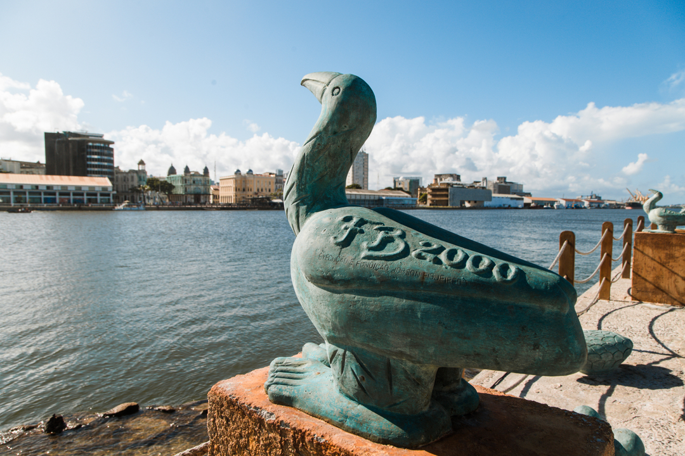
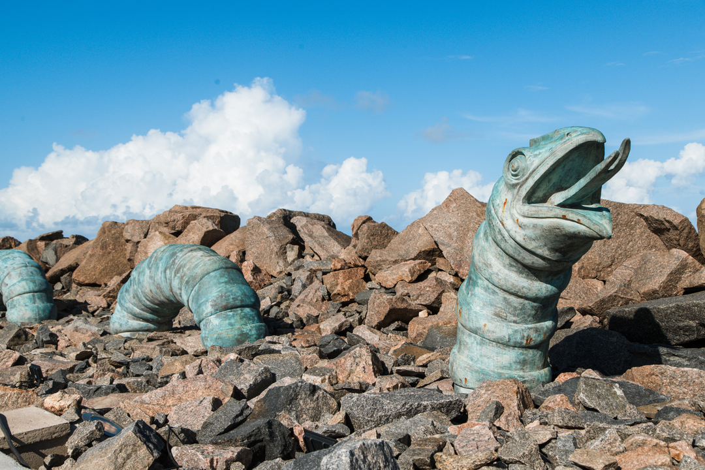

Localizado no Bairro do Recife, diante do Marco Zero, o Parque de Esculturas Francisco Brennand vai além da Coluna de Cristal com 32 metros de altura, há um conjunto de 87 obras escultóricas de cerâmica e obras de bronze

Coluna de Cristal
Com 32 metros de altura, o topo da Coluna de Cristal é uma flor da espécie calateia Cristal. No corpo da estrutura, há quatro serpentes perto da base e mais quatro na parte superior.



Ovíparos
Para o artista o ovo é o símbolo da pedra que gera a vida quando é aquecida. Para Brennand é o símbolo maior da reprodução e da criação. Essa reprodutibilidade representaria a eternidade, por isso que os animais representados pelas outras esculturas são sempre ovíparos, como pássaros, tartarugas e serpentes.